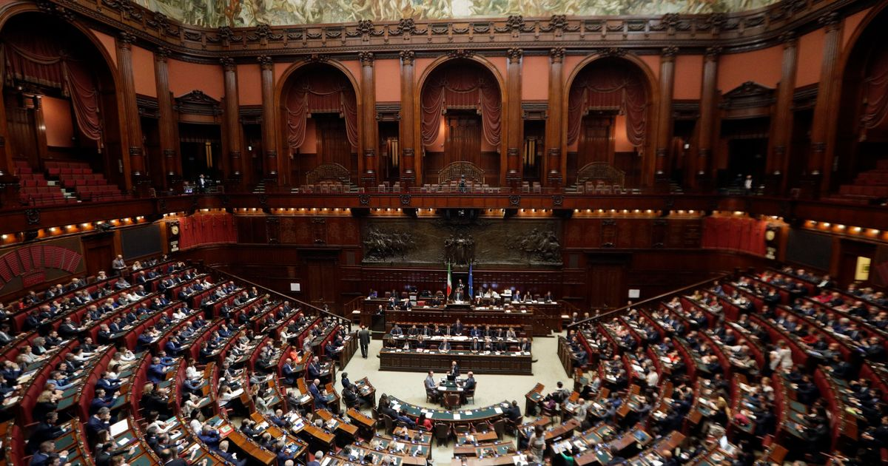

Italia - dettare le regole per poi lamentarsi
La democrazia elettiva e rappresentativa è oramai considerata ad Occidente l'unico strumento veramente "giusto" per governare secondo la volontà popolare. Forme alternative di governo sono considerate automaticamente autoritarie e non sono quasi mai analizzate con la dovuta obiettività. Inutile parlare di una democrazia a livello economico: in questo campo è tautologico che si instauri un diritto censitario se vi si applicano i dettami del "libero" mercato e che si forma di conseguenza quella che molte posizioni non capitaliste e non centriste (di entrambi gli estremi dello spettro politico) hanno detto hanno definito una plutocrazia.
Questo articolo non si proporrà però di criticare i principi del sistema attualmente in uso nel mondo occidentale, quanto evidenziarne delle fallacie nella sua malcelata autocritica che involontariamente trapela anche dai suoi feroci sostenitori. Prima di tutto partiamo da un concetto fondamentale su cui questo sistema si fonda.
Prendendo il pensiero di Rousseau, il diritto di voto ha come obiettivo l'instaurazione di una uguaglianza di fondo fra gli individui: una persona equivale a un voto; ognuno vale quanto gli altri. Questo fondamento lodevole ha una conseguenza all'atto pratico che non deve essere di per sè disprezzabile, ma che va necessariamente compresa ed accettata se si vuole mantenere questo sistema secondo i termini decisi.
Bisogna capire, infatti, come la collezione di tutti i singoli voti si raduni nella volontà generale che poi esprime la volontà generale. Colui che risulta insoddisfatto dal risultato del voto ne ha tutto il diritto, ma deve capire come questo non significhi che il sistema npn abbia compiuto il suo lavoro correttamente, anzi, esattamente il contrario. Il singolo individuo esprime la sua volontà nel voto stesso ed accetta un "patto" attraverso il quale accetta anche l'esito del voto. L'individuo compie demana la propria libertà alla collettività, a cui contribuisce attraverso il voto: La sua volontà individuale si scioglie nel voto collettivo.
È forse in questo passaggio che tanto i privati cittadini quanto i leader politici si perdono. Lamentarsi di un'elezione, purché essa sia svolta senza plateali metodologie considerate non democratiche da qualsiasi schieramento quali coercizione e corruzione, è sempre sbagliato. E non perché di cattivo gusto, ma perché significa non accettare delle regole a posteriori e dopo aver constatato che l'esito finale del "gioco" giocato secondo il regolamento non va a proprio favore. Per fare un parallelo pratico, significherebbe partecipare ad una qualsiasi competizione, ovviamente provvista di un regolamento che determini la scelta del vincitore, e poi reclamare il risultato una volta che questo è stato decretato secondo il regolamento stesso.
Il Governo Meloni rappresenta un pericolossissimo esempio di rappresentanza popolare che rispecchia il retroterra post-fascista italiano; il fallimento dei partiti di massa social-democratici nel formare una base elettorale solida; l'avanzamento del populismo e personalismo caratteristico di una Seconda Repubblica di stampo Berlusconiano; lo stato di apatia generale dimostrato dall'infimo numero di voti nelle urne; una propaganda oscurantista e derogatoria non argomentativa contro posizioni avverse allo status quo occidentalista.
Per ribadire l'ovvio: gli attuali sistemi parlamentari dell'occidente non sono stati il metodo migliore per governare il mondo fino ad oggi ed adesso lo sono ancora meno. In un mondo sempre più tecnologico, polarizzabile, indifferente ed ignorante, i problemi elencati nel paragrafo precedente non possono far altro che accrescere, soprattutto se immersi in un sistema, come quello attuale, che favorisce nei risultati chi li cavalca per successo personale, politico ed economico. Una soluzione è terribilmente necessaria. Una soluzione, seppur non semplice, esiste.
Noi tutti abbiamo "[...] solo interpretato il mondo in vari modi, ma il punto ora è di cambiarlo" (K. Marx).
Indipendente Trockista8 Dicembre 2023